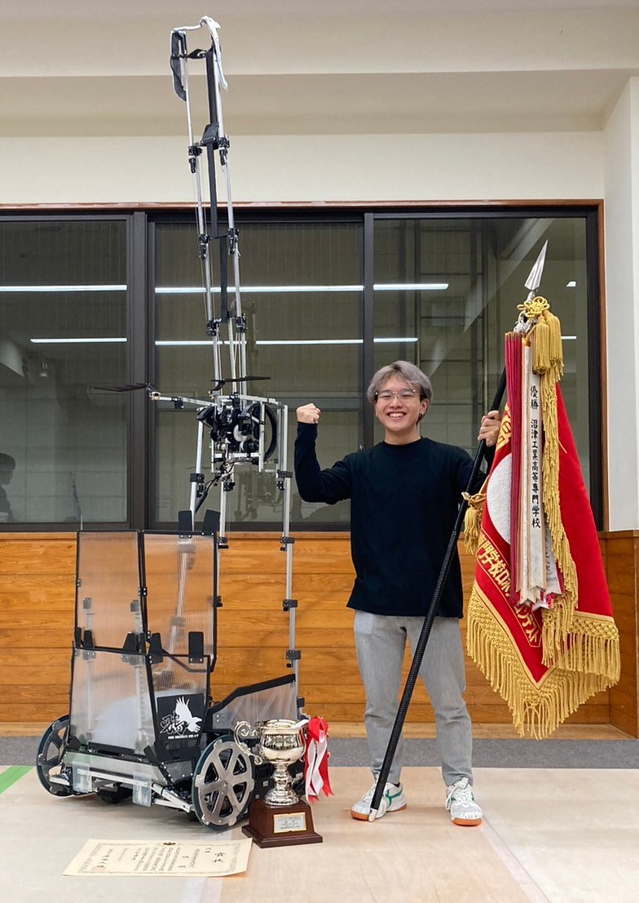
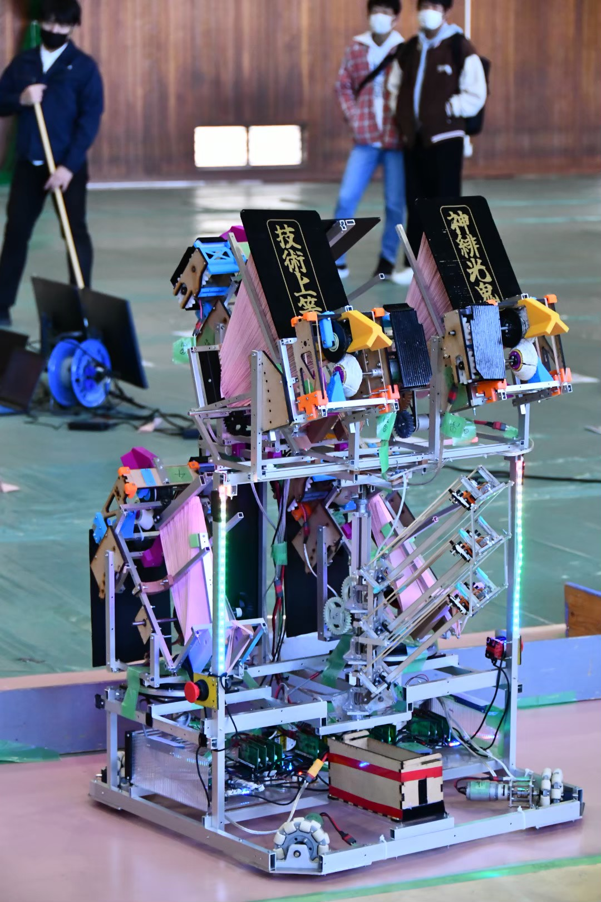
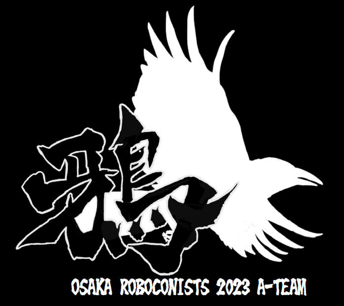

About
2020年に大阪公立大学工業高等専門学校へ入学。現在は4年メカトロニクスコースに在籍しています。 また高専入学後に所属した「ろぼっと倶楽部」では、高専ロボコン全国優勝のため、プログラムを書いてチームに貢献してきました。 Show more...
Works
Career
大阪公立大学工業高等専門学校へ入学。
高専ロボコン2021 近畿地区大会出場 協賛企業特別賞受賞

高専ロボコン2022 近畿ベスト4 技術賞受賞
高専ロボコン2023 近畿地区アイデア賞受賞
高専ロボコン2023 全国大会優勝